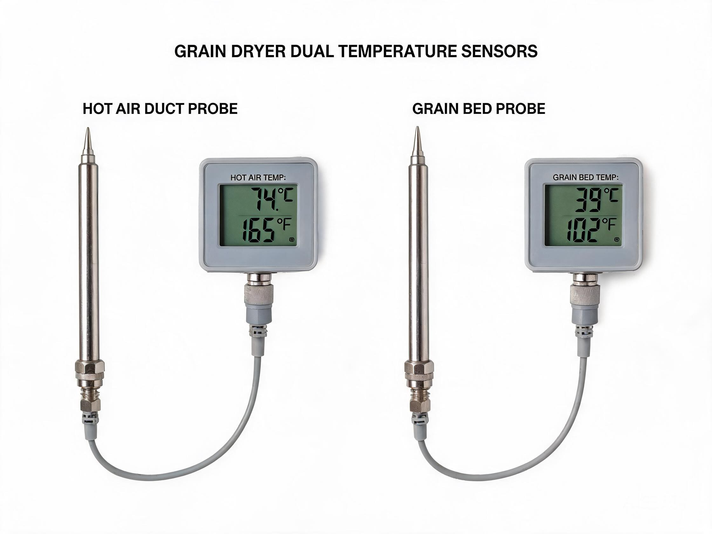
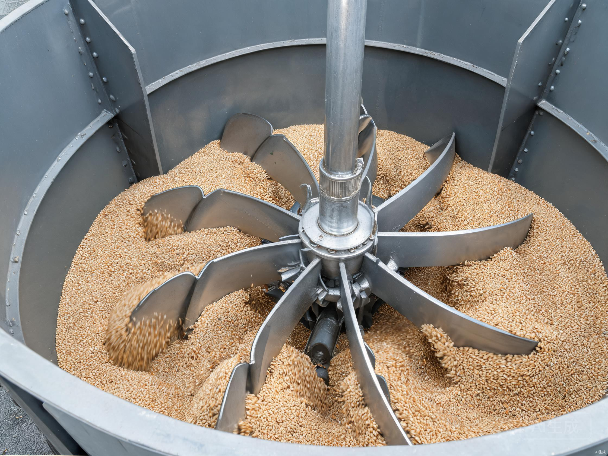

Complete Grain System
A turnkey post-harvest system that integrates pre-cleaning, conveying, drying, and storage into a single engineered workflow. Customized to your farm scale, site layout, and processing needs — pick the dryer models that match your capacity, and we engineer the cleaning, conveying, and storage equipment around them. One supplier, one warranty, one point of contact.
Full Specifications
System-level technical details for the Complete Grain System.
| Model | Complete Grain System |
| Category | Turnkey Post-Harvest Solution |
| Capacity | Custom (based on selected dryer models & quantity) |
| Fuel Types | Custom (matches selected dryer fuel — Diesel / LPG / Natural Gas / Biomass / Wood / Coal) |
| Grain Types | Paddy, Maize, Wheat, Sorghum, Soybeans |
| Moisture Reduction | Matches selected dryer (typically 14–16%) |
| Power Supply | Custom (based on total system power, 3-Phase 50/60Hz) |
| Dimension | Custom (based on equipment layout & site) |
| Stages | 4 — Pre-Cleaning, Conveying, Drying, Storage |
Engineered to Save Labor, Built for Automation
Every component is designed to reduce manual work and deliver consistent drying quality — from the burner to the control system.

Multi-Fuel Burner System
Auto-switches between 6 fuel types in under 30 minutes. The burner auto-calibrates combustion parameters for each fuel — no manual reconfiguration, no specialist required.
 Diesel
Diesel Natural Gas
Natural Gas Biomass
Biomass Rice Husk
Rice Husk Wood
Wood Coal
Coal- One-touch fuel switching via PLC touchscreen
- Auto air-fuel ratio calibration per fuel type
- Flame failure protection & auto-restart

PLC Control Cabinet
Automates the entire drying cycle — from temperature control to moisture sensing. One operator can supervise multiple machines remotely.
- Touchscreen HMI with intuitive interface
- Automatic moisture sensing & drying cycle control
- Remote alarm via SMS for temperature deviations
- Drying data logging for quality traceability

Dual Temperature Sensors
Monitors both hot air temperature and grain bed temperature in real-time. The PLC adjusts burner output automatically to prevent overheating or underdrying.
- Hot air sensor: ±1°C precision in drying plenum
- Grain sensor: monitors core grain temperature
- Auto shutdown if grain temp exceeds safety threshold
- Digital display on control cabinet

Auto Grain Agitator
Rotating auger inside the drying hopper prevents grain from sticking and ensures uniform moisture distribution. Eliminates the need for manual grain turning between batches.
- Auto-rotating paddle mechanism
- Prevents grain bridging and hot spots
- Ensures ±0.5% moisture uniformity
- Programmable rotation intervals via PLC
What Makes the Complete Grain System Different
Why operators choose an integrated turnkey solution.
Turnkey Engineering
One supplier designs and delivers the full workflow — pre-cleaning, conveying, drying, and storage — engineered to work together from day one.
Modular Configuration
Mix and match mobile batch, fixed batch, or continuous tower dryers with the cleaning, conveying, and storage equipment that fits your site.
Custom Capacity
Capacity is scaled to your operation — from small farm stations to large processing centers — by selecting the right dryer models and quantity.
Single-Source Supplier
One warranty, one service contract, one point of contact across the entire post-harvest workflow — no finger-pointing between vendors.
Where Complete Grain System Shines
Turnkey solutions for large-scale, integrated grain handling operations.
Agricultural Industrial Parks
Integrated grain handling for large-scale agricultural zones. Centralized drying, storage, and dispatch serve multiple processing units.
Grain Logistics Hubs
Rail-connected or port-adjacent facilities for bulk grain receiving, drying, and dispatch. Minimize turnaround time for high-volume trade.
Government Strategic Reserves
National and provincial grain reserve facilities with multi-stage drying. Meet strict quality and preservation standards for long-term storage.
Integrated Processing Complexes
Combined cleaning, drying, storage, and milling under one system. Eliminate material handling between separate machines.
Export-Oriented Facilities
Meet international export moisture and quality standards with controlled drying. Phytosanitary compliance for cross-border grain trade.
Scalable Operations
Modular design allows phased expansion as throughput requirements grow. Start with core modules and add capacity over time.
System Performance Metrics
Integrated performance across all system modules.
What's Included
Four integrated stages make up the complete post-harvest workflow.
Pre-Cleaner
Removes impurities, straw, and broken grains before drying — protecting downstream equipment and improving drying uniformity.
Conveyor
Bucket elevator, screw conveyor, or belt conveyor — selected to match your grain type, throughput, and site layout.
Grain Dryer
Optional mobile batch, fixed batch, or continuous tower dryer — matched to your daily capacity and fuel availability.
Storage
Steel silo, flat-bottom silo, or hopper-bottom silo — sized for your post-drying buffer and long-term storage needs.
Frequently Asked Questions
Common questions about complete grain systems.
How is the system customized to my needs?
What is the typical project timeline?
What modules are included?
Is training provided?
What about after-sales service?
Can the system be expanded later?
Related Products
Core components that can be integrated into your system.


Ready to build a complete post-harvest system?
Get a custom engineered quote for the Complete Grain System. 24-hour response guaranteed.